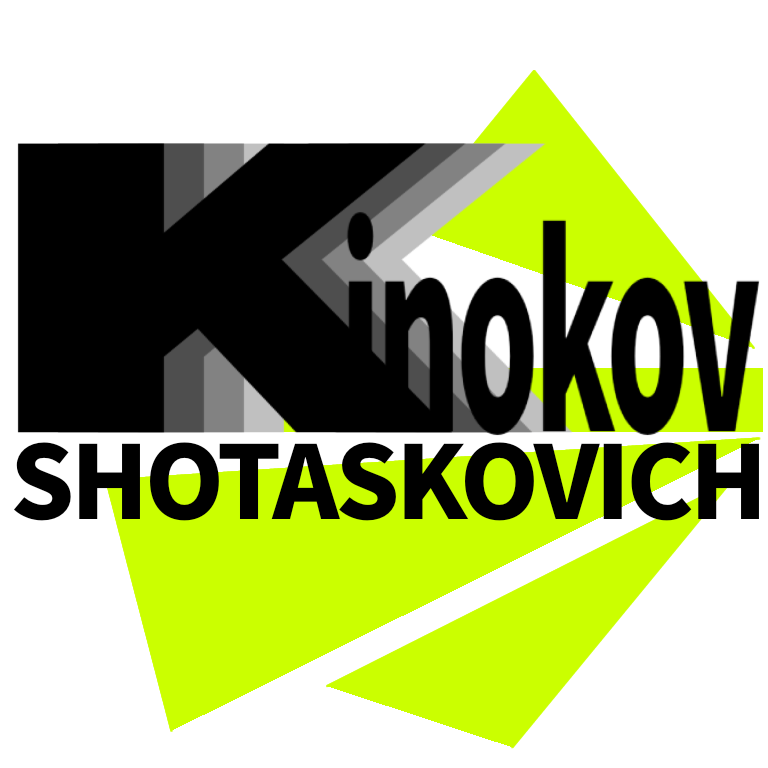

About Me
Rustacean
![]()
Favour Opensource
I'm a menter of the CoderDojo Eniwa
I'm learning computer science in the NIT Tomakomai
I belong to xe-Non
Resume
2008 : Birth at Hokkaido, Japan
2019 : Began programming with supporting of a CoderDojo
2024 : Enrolled NIT Tomakomai
2024 : Got Eiken 2nd grade
2024 : Became Rustacean
2024 : Found a game developing team, xe-Non with classmates.
2025 : Enrolled to the department of Computer Science and Engineering
Skills
Summary
I began learning Rust because of the speed and safety of it
I learnt the language step by step with making a lot of apps with the language
riginally, a one of my works, MC++ a compiler to compile my own programming language onto Minecraft commands was written in Python that I learnt in my school.
But, I was not satisfied with the speed of it. Firstly, I tried C++ but I didn't like the memory unsafety of the language. Then, I found the programming language, Rust.
I was witched by the language because of speed, safety, and great tools, the cargo for example. I began from a simple app, the Dharma a Q and A app. Then, the next one is a bit more difficult one, the next one is more difficult one... Then, I could made a working compiler.
![]()
Summary
I had an aspiration to be able to speak English fluently
I began learning by listening English a lot in YouTube
With coutinous effort, I could be able to speak English fluently
At the first, the reason of I learn English is just for read English documentation. But, after I found a YouTuber who speaks fluent English in VRChat, I became to have a aspiration to be able to speak English alike him.
After that, I began to try to watch English videos in YouTube. Then, my score of English got higher and higher rapidly. I got the confidence of English, and I began to practice of speaking. Firstly, it was huge challenge for me, but I continued practicing English conversation alone in the bath by playing two roles.
Nowadays, I think I'm top 1% English speaker in my school students although I'm 2nd grade. I proud it as a result of the continuous effort.